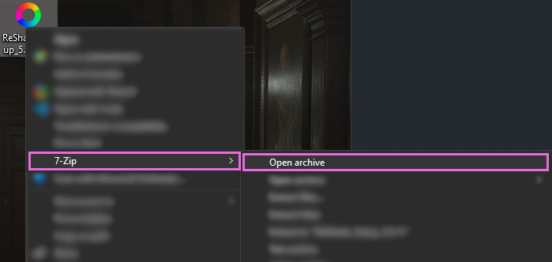
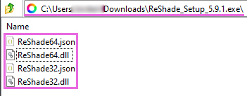
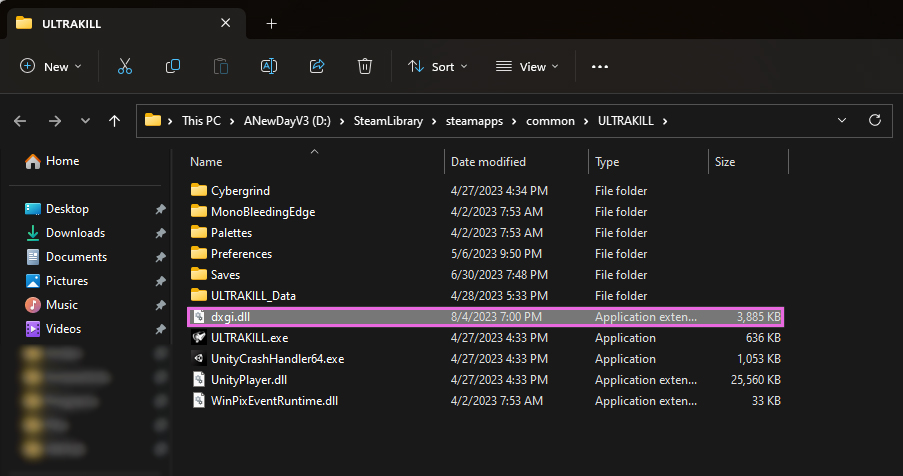
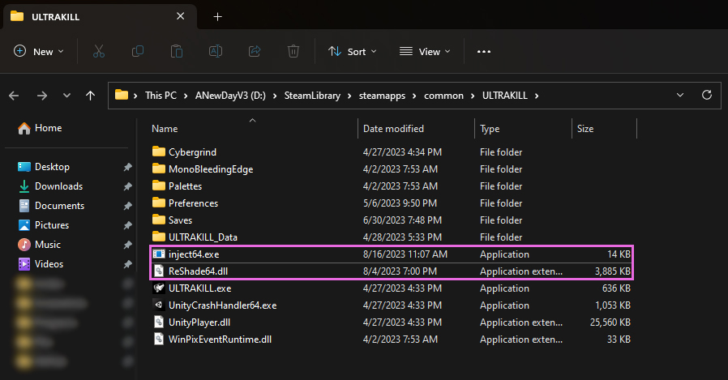

ReShade Manual Installation Guides
Some games might not support direct installation through the ReShade Installer due to permission constraints, administrative prompts, or even missing user dependencies.
This guide aims to help users understand and navigate the process of manual installation, ensuring they can seamlessly integrate ReShade into their desired game.
Installing ReShade Manually
Step 1: Identify Your Game’s Architecture
- Navigate to PCGamingWiki.
- Use the search bar to find your game.
- Locate the API tab on your game’s page, typically towards the end.

Step 2: Obtain ReShade Installer
- Download the latest ReShade installer from the official ReShade website.
Step 3: Get 7Zip
-
Download and install the latest
.msiversion of7Zipfrom 7Zip’s official website.
While WinRar can be an alternative, this guide focuses on using
7Zip.
Step 4: Extract ReShade Binary
- Right-click on the ReShade Installer
ReShade_Setup_x.x.x.exe, hover over7Zip, and selectOpen Archive.  - Choose the necessary DLL from the options:
ReShade64.dllfor 64-BitReShade32.dllfor 32-Bit 
Step 5: Rename the Binary
Right-click the ReShadeXX.dll you’ve extracted and choose Rename. Then, rename it according to your game’s rendering API:
- dxgi.dll - DirectX 10/11/12
- d3d12.dll - DirectX 12
- d3d11.dll - DirectX 11
- d3d10.dll - DirectX 10
- d3d9.dll - DirectX 9
- opengl32.dll - OpenGL

Step 6: Move the Renamed DLL
- Position the renamed DLL into the root folder of your game, the same directory where the game’s executable is located. 
- If unsure of your game’s executable location, consult our guide on identifying your game’s executable.
Upon completion, your game should launch with ReShade already integrated! 
How to Manually Inject ReShade
Certain games do not support automatic ReShade injection during runtime. This is especially common for UWP (Microsoft Store) games, which often disallow automatic injection.
Thankfully, Crosire has developed a tool for manual DLL injection into games.
Crosire’s Inject tool, being an external injector, is more likely to trigger anti-cheat systems. Use with caution and at your own risk.
Step 1: Determine Your Game’s Architecture
- Go to PCGamingWiki.
- Enter your game’s name in the search bar.
- Proceed to the API section on your game’s page (usually located towards the end).
Step 2: Download the Right Injector
Choose the injector based on your game’s architecture:
Step 3: Download ReShade Installer
Acquire the latest ReShade Installer from the ReShade website.
Step 4: Get 7Zip
- Download and install the latest
.msiversion from 7Zip’s official website.
WinRar can serve as an alternative, but this guide utilizes 7Zip.
Step 5: Extract ReShade Binary
- Right-click the ReShade Installer
ReShade_Setup_x.x.x.exe, hover over7Zip, and selectOpen Archive. - Extract the desired DLL:
ReShade64.dllfor 64-BitReShade32.dllfor 32-Bit
The DLL architecture should match the injector you’ve previously downloaded.
Step 6: Position the Files
Move both the injectXX.exe and ReShadeXX.dll files to your game directory. 
For assistance locating your game directory, see our guide on finding your game’s executable.
Step 7: Identify the Game Process Name
- Launch the desired game.
- Open Task Manager and right-click on your game under the processes tab, then select
Go to Details.
- The highlighted executable displays the game’s process name.

Step 8: Inject ReShade
- Close your game.
- Navigate to your game’s directory and open a command prompt by typing
CMDinto File Explorer’s address bar.
- Input
inject[x32/x64].exe "name_of_the_process.exe"and hit Enter.
- Open your game.
If executed correctly, ReShade should be active once the game begins.